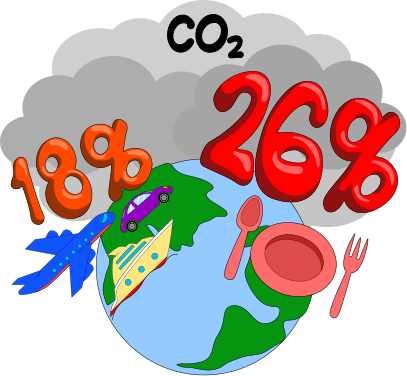
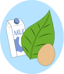
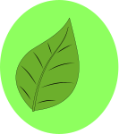
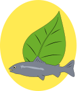
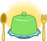
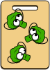
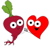

Как работает TrumPick
Где работает TrumPick
Что Вы узнаете:
Влияние питания на здоровье и старение
-
Тип питания и возраст начала
болезней и старения -
Связь питания со
здоровьем зубов и дёсен -
Достаточно ли Вы
пьёте воды -
Потребляете ли все
важные соединения -
Здоровый вес без подсчёта
калорий и чувства голода -
Получать удовольствие и
радость от полезной еды
Данные TrumPick:
самые достоверные из доступных
Что Вы узнаете:
Влияние питания на окружающую среду

Ваш выбор еды влияет на ситуацию в экологии больше, чем транспорт
Да. Интересы всех совпадают
Что Вы узнаете:
Использованы ли животные?
-

Вегетарианцам
-

Веганам
-

Пескетарианцам
Явные и скрытые животные продукты при изготовлении “ешек” и готовой еды
Всё в одном месте
Что подскажет TrumPick
-
Чем заменить привычные и отсутствующие продукты
-

Что, сколько и как долго употреблять для эффекта
-

Конкретные инструкции для магазина и кухни
-
Химический состав продуктов
-
Возбудители чувствительности, непереносимости, аллергии
-

Связь риска потребления продукта и болезни
-
Помощь беременным, кормящим, малышам
-
Содействие в улучшении состояния кожи, ногтей, волос
12 причин пользоваться TrumPick
-
100% независимость.
Нет рекламы и влияния связей -
Помощь в ремиссии. При любом
назначенном врачом лечении -
Улучшение результатов
анализов, экономия на
лекарствах и т.п. -
Улучшение состояния, качества
кожи, появления чувства
лёгкости -
Конкретные рекомендации для
разных ситуаций -
Помощь в готовке и выборе
вкусных комбинаций -
Не несёт рисков, но результат
может быть невероятным -
Ваш личный вклад в победу над
Глобальным потеплением -
Мотивацию, основанную на
точном знании, трудно сломать -
Честные критерии отбора
данных для рекомендаций -
Помощь в обучении детей
здоровым отношениям с едой -
На всякий случай: иногда что-то
хочется узнать про еду
Вопросы? TrumPick отвечает
-
Сколько стоит использование TrumPick?
TrumPick дарит знания о связи продуктов питания со здоровьем и молодостью абсолютно бесплатно. Если Вы хотите отблагодарить и поддержать проект, Вы можете воспользоваться формой или в самом приложении: ""Данные"" - ""Настройки"" (правый верхний угол) - ""Вознаградить за результат"". Все средства, полученные от добровольной поддержки, идут на развитие проекта
-
Как дорого обходится рацион согласно рекомендациям TrumPick?
Рекомендации TrumPick не содержат набор продуктов, который в обязательном порядке нужно выбрать для достижения результата. Вы можете самостоятельно изменять продукты, содержащие важные здоровью и молодости соединения, согласно Вашим предпочтениям. Это могут быть разные группы продуктов даже в противоположных друг другу ценовых и видовых категориях. Аналитика TrumPick по основным регионам мира показала, что соблюдение рекомендаций проекта сопоставимо с расходами при стандартном типе питания. Как правило, в каждом регионе мира, в т.ч. находящихся в северных широтах, есть недорогая категория продуктов, подходящих под критерии адекватного питания
-
Составил своё фактическое меню. Почему у меня низкий возраст начала старения?
Часто мы неверно понимаем термин ""адекватное питание"". Большинство людей честно стараются придерживаться принципов питания, которые им кажутся правильным. Однако в настоящее время наука о питании, основанная на рецензируемых статьях, академической литературе, данных и физиологии человека, химии и социологии, сформулировала основные принципы и подходы, связанные с реальными критериями адекватного питания. Они могут отличаться от того, что о питании может думать человек, в т.ч. являющийся учёным, врачом, автором известных книг и т.п. По этой причине Вы можете увидеть совсем не ту оценку, которую Вы ожидали. Главная задача TrumPick - это помочь Вам улучшить Ваше здоровье и сохранить молодость. Вы сможете увидеть эти результаты благодаря сдаче медицинских анализов и субъективному самочувствию. Однако для этого важно быть готовым к смене Вашего ежедневного рациона питания. Возможно, Вам по началу покажется это сложным. Однако на 20-60 день, когда Вы увидите явные положительные результаты, а также привыкнете к новому стилю питания, Вам будет легко. Адекватное питание, о котором говорит TrumPick, представлено из разных ингредиентов и пищевых групп. Они могут быть частью очень вкусных блюд. Главное - Ваше искреннее и реальное желание изменить своё здоровье и внешность к лучшему, а не делать вид, что Вы что-то меняете. На самом деле, это не большое усилие, которого приводит к огромным положительным результатам. Если всё же у Вас не получается в силу социальных или культурных причин, а также личной веры в какие-либо доводы придерживаться обоснованных принципов, Вы можете использовать TrumPick ""для сведения"" и ситуативного применения, т.е. исполнения только тех рекомендаций, которые лично Вам подходят. Это также улучшит Ваше самочувствие и снизит риски хронических заболеваний, пусть и не так значительно, как исполнение большинства рекомендаций TrumPick
-
У меня плохая генетика и высокие риски болезни. Разве питание мне поможет?
Да, правильное питание может сыграть важную роль в управлении рисками заболеваний, даже при наличии подавляющего большинства генетических предрасположенностей. Хотя генетика может влиять на Ваши склонности к некоторым заболеваниям, принципы адекватного питания, как правило, за редким исключением, играют решающее значение. В т.ч. при многих действующих хронических заболеваниях, о которых сообщается как о болезнях, имеющих генетические основы, можно добиться их ремиссии. Например, к заболеваниям, которые полностью можно предотвратить при помощи питания, относятся большинство сердечно-сосудистых заболеваний, в т.ч. ""холестериновые бляшки"" (атеросклероз), эректильная дисфункция, диабет 2-ого типа, гипертония, запоры, многие виды рака и т.п. Т.е. именно те заболевания, которые являются основными причинами преждевременной смерти, ухудшения комфорта и качества жизни, и для лечения которых тратится наибольшее количество денег и сил. Поступающие с продуктами питания соединения или стимулируют действие генов, которые приводят к болезням, или подавляют их, что припятствует появлению этих заболеваний. Кроме того, многие заболевания, которым приписывают преобладающую генетическую составляющую, могут таковыми не являться. Часто они связаны с привычками в питании и образе жизни, переданными от родителей, а родителям - от их родителей, а также преобладающих в обществе, где Вы живёте. Часто смена поведения или постоянное нахождению с людьми, имеющими иные более здоровые привычки, коренным образом меняют здоровье, а заболевания с предполагаемыми генетическими предрасположенностями не развиваются. Вы можете попробовать использовать TrumPick и посмотреть, какими будут Ваши результаты анализов и самочувствие через пару месяцев. Рекомендации TrumPick построены таким образом, что они не навредят Вам. Если Вы не будете видеть явного и чёткого результата, Вы можете просто вернуться к старым привычкам и оставить от советов TrumPick лишь то, что Вам понравится. Т.е. если Вы сомневаетесь в силе питания, начните использовать TrumPick как возможность попробовать что-то новое, что не потребует дополнительных вложений. А если этот опыт окажется приятным за 2-3 месяца, Вы можете перенять его в Вашу жизнь
-
Насколько вероятно, что следование советам TrumPick поможет улучшить здоровье и замедлить старение?
Рекомендации TrumPick построены таким образом, что их применение не может нанести какого-либо вреда как в долгосрочной перспективе, так и в моменте реализации. Эффективность зависит от того, насколько точно Вы следуете советам. Если Вы придерживаетесь более 2-3 месяцев каждого из следующих пунктов, то вероятность предотврщения и ремиссии заболеваний оценивается крайне высоко и по большинству состояний вероятность составляет выше 95%: точно выбрали режим, соответствующей Вашей ситуации; среди ежедневного количества продуктов в разделе ""Меню"" в зелёной зоне находятся как минимум 80% продуктов, а в красной не более 5%; процентное содержание составляет более 80% от числа необходимых соединений ежедневно в течение более чем 2-3 месяцев; Вы примерно соблюдаете количество продуктов, необходимых для достижения эффекта
-
Является ли следование советам TrumPick заменой лечения, назначенного врачом?
Нет, Вам следует точно придерживаться рекомендаций врача, если они назначены в рамках протоколов лечения. Если у Вас есть подозрения, что врач ошибается и что-то делает неправильно, целесообразно запросить второе медицинское мнение или обратиться за разъяснением в Вашу страховую компанию, если она оплачивает медицинские расходы. Адекватное питание обеспечивает организм соединениями, которые нужны защитной системе, т.е. иммунитету, для предотвращения заболеваний и борьбы с ними. Поэтому питание -это серьёзный фактор, для кратного сокращения рисков как инфекционных, так и хронических заболеваний, сокращения их сроков и тяжести течения, а также облегчения симптомов и предотвращения наиболее серьёзных последствий не поддающихся лечению болезней. Т.е. профессиональная медицинская помощь, основанная на принципах доказательной медицины, и адекватное питание, о котором сообщает TrumPick, дополняют друг друга. И одно не заменяет другое. Как правило, если Вы следуете советам адекватного питания до момента начала хронических болезней и в течение долгого промежутка времени, Вы имеете низкий риск всех заболеваний, и медицинское вмешательство в этом случае Вам не потребуется
-
Указано, что TrumPick находится в стадии бета-тестирования. Что это значит?
Это означает, что TrumPick находится на заключительном этапе разработки программного продукта, предшествующим его выпуску. Бета-тестирование - это процесс, в ходе которого продукт предоставляется Пользователям для тестирования на реальных условиях использования. TrumPick отслеживает обратную связь от Пользователей, исправляет ошибки и улучшает функционал. Пожалуйста, не относитесь к TrumPick слишком строго. Это крайне сложный функционал и он уже может Вам помочь. А благодаря Вашему использованию, отзывам и предложениям проект будет развиваться и станет значительнее удобнее
-
Как гарантируется независимость TrumPick?
В случае заключения каких-либо коммерческих контрактов TrumPick обязуется сообщить это. Т.е. будет предоставлен подробный публичный отчёт о поступлениях средств, чтобы каждый мог оценить наличие какой-либо заинтересованности . Политика TrumPick не предполагает взаимодействие с какими-либо брендами, т.к. происходит оценка используемых ингредиентов и влияния продуктов исходя из её химического состава. Т.е. для положительной или отрицательной оценки необходимо изменить перечень ингредиентов продукта, используемый для его приготовления
-
Какая методология оценки продуктов питания?
Для попадания каких-либо сведений о влиянии продуктов на здоровье и молодость, эти данные должны соответствовать одновременно трём или более из следующих критериев. Во-первых, статистическая связь между употреблением продуктов и развитием тех или иных заболеваний, в т.ч. многократно подтверждённая и устойчивая корреляция. Во-вторых, оценка продуктов из рецензируемых научных журналов. Как правило, оцениваются материалы, выход которых не оплачивался производителями пищевых продуктов, а авторы статей и редакторы журналов, где эта статья публикуется, не должны иметь явные связи с такими производителями. Отдельное внимание уделяется адекватности метода оценки, применяемых к описываемым данным. В-третьих, сведения о механизме развития и влиянии на болезни продуктов и его отдельных компонентов, содержащихся в актуальной академической литературе. Т.е. книг, используемых для подготовки профессионалов в области медицины, химии, биологии, статистики и иных направлений, прямо или косвенно связанных с питанием. В-четвёртых, сбор наблюдений от врачей и косметологов о влиянии тех или иных типов питания или отдельных продуктов на ход течения болезней и показатели анализов. Это помогает оперативно замечать особенности влияния тех или иных продуктов при определённых состояниях. В-пятых, анализ привычек питания самых долгоживущих людей мира. Как правило, это выполняется исходя из сведений научных журналов, описание образа жизни в составе книг и где-либо опубликованных заметок, подготовленных профильными журналистами и исследователями, а также свидетельства долго проживающих в соответствующих местностях людей. В-шестых, данные страховых компаний, т.е. как много расходов на лечение заболеваний приходится на пациентов, придерживающихся одного или другого типа питания. Также из рекомендаций, как правило, исключаются данные, применение которых сопряжено с дополнительными рисками, т.е. есть объективный риск того, что в результате применения состояние здоровья людей станет хуже. Дополнительно для понимания методологии оценки, применяемой системой TrumPick, Вы можете изучить
-
TrumPick оценивает продукты без этикеток с ингредиентами, например овощи или фрукты?
Да, конечно. Вы можете набрать название пр, одукта или сфотографировать ценник с его названием. TrumPick расскажет о содержании в продукте витаминов, микроэлементов, пищевых волокон, антиоксидантов, наличия данных о влиянии продукта на повышение или снижение рисков заболеваний, наличие его в рационе долгожителей. А также о вкусных сочетаниях с другими продуктами и рецептами, где продукт может использоваться в значимом количестве, т.е. в количестве, которое тесно связано с со снижением риска развития заболеваний
-
TrumPick учитывает географию выращивания или добычи цельных продуктов продуктов?
Вероятно, этот вопрос связан с тем, что цельные продукты, наподобие овощей, фруктов, рыбы и т.п. могут иметь статус "органическое", отличающийся друг от друга профиль по содержанию витаминов, микроэлементов и т.п. Действительно, продукты могут отличаться по содержанию конкретных соединений в их составе, что зависит от географии и способов выращивания. А органические продукты содержат на поверхности меньшее число вредных соединений. Однако для обеспечения роста каждый продукт одного вида обладает перечнем сходных соединений в составе. Т.е. есть вид и число витаминов, микроэлементов, антиоксидантов, пищевых волокон и т.п., без которых продукт не сможет достичь зрелости и умирает на ранней стадии, когда он не пригоден в пищу. Некоторые продукты содержат больше таких соединений, другие - меньше. В каких-то продуктах есть дополнительный вид соединений. TrumPick сообщает о тех компонентах, которые всегда есть в значимом количестве в продукте согласно данным как минимум по 10 и более регионам выращивания (вылова) этих продуктов. Как выращенных обычным способом, при помощи методов органического земледелия (аквакультуры), так и растущих в диких условиях. Таким образом, информация TrumPick о составе цельных продуктов - минимальный набор соединений, которые оказывают значимое влияние на человека при их потреблении. Некоторые продукты могут содержать большее, но не меньшее, число полезных соединений. Растительные продукты, имеющие статус ""органическое"", как правило, содержат на поверхности меньшее количество удобрений, в т.ч. пестицидов. Однако есть кулинарные способы полного удаления этих удобрений с поверхности продукта, о которых сообщает TrumPick
-
TrumPick учитывает количество продуктов питания?
Количество употребляемого продукта, а также частота включения его в рацион - ключевой фактор, обеспечивающий влияние продукта на организм. Т.е. также, как доза и соблюдение графика приёма определяет эффективность лекарства - лекарственная доза, так и количество и продолжительность включения в рацион продукта - его ""пищевая доза"", обеспечивает влияние соответствующей еды на организм. Поэтому количество эффективного или безопасного числа продукта - основополагающая вещь, о которой сообщает TrumPick. На странице ""Результат"", т.е. после анализа продукта, на странице ""Меню"" и вкладках страницы ""Идеальный рацион"" или ""Поиск"" при нажатии на продукт, Вы можете увидеть эффективное количество продукта. Это количество может отличаться в зависимости от выбранного Вами режима, т.е. исходя из Вашей жизненной ситуации. Также демонстрируется минимальный срок включения в рацион продуктов такого типа, после которого наступают ощутимые и контролируемые эффекты
-
Нужно ли употреблять рекомендуемое TrumPick время один продукт для достижения эффекта?
Вопрос связан с разделом ""Когда Вы увидите результат в выбранном режиме"", доступный на странице ""Результат"" после проверки продукта. Т.е. нужно ли для достижения эффекта изо дня в день употреблять именно один конкретный продукт. Необходимо: включать продолжительное время в рацион продукты, рекомендуемые TrumPick в разделе ""Идеальный рацион"" на странице ""Меню"" для конкретного режима; продукты ""зелёной зоны"" должны составлять 90% от общего ежедневного рациона; общее число процента от общего количества соединений, необходимых организму, приближалось к 100%. Т.е. важно разнообразие продуктов, которые связаны с адекватным рационом. Даже самый полезный продукт не содержит сразу всех компонентов, достаточных для поддержки всех функций организма. Если выдержано условие, что не менее 90% продуктов на странице ""Меню"" относятся к ""зелёной зоне"", а количество ежедневно потребляемых соединений каждый день больше 80%, то Ваш рацион соответствует эффективной норме. Если потребуется дополнительное включения в рацион какой-то группы продуктов из-за наличия нужных в них уникальных соединений, по которым имеются сведения, что они приносят дополнительную пользу в Вашей ситуации, TrumPick сообщит об этом дополнительно. Таким образом, обозначенный срок под надписью ""Когда Вы увидите результат в выбранном режиме"" - это продолжительность общего адекватного рациона питания, о котором сообщает TrumPick. Нет необходимости употреблять одни и те же продуты каждый день. Вы сможете легко их заменить другими полезными продуктами. Это принесёт больше пользы и вкусовых ощущений
-
Подходит ли TrumPick веганам, вегетарианцам и пескетарианцам?
Да, конечно. TrumPick содержит разделы, которые могут быть важными специально для лиц, придерживающихся этических норм. Например, TrumPick показывает ингредиенты, которые могут быть изготовлены с использованием продуктов животного происхождения с указанием источника сырья. Часто среди таких продуктов есть не очевидные продукты. Также есть раздел, который поможет веганам и вегетарианцам исключить из рациона растительные продукты, оказывающие на их кожу и здоровье особо плохой эффект. Благодаря TrumPick строгие веганы, веганы, вегетарианцы и пескетарианцы могут легко спланировать своё меню, которое обеспечит их всеми необходимыми соединениями. Именно трудность в планировании диеты, закрывающее все потребности лиц, придерживающихся этических норм, является одним из ключевых аспектов, о которых сообщают исследования
-
Насколько безопасно пользоваться советами TrumPick?
Главный принцип рекомендаций - "не навреди". Т.е. рекомендации не содержат советов, которые могут ухудшить Ваше состояние или увеличить обоснованные риски
-
У меня аллергия. Чем TrumPick может мне помочь?
TrumPick содержит сведения о продуктах, связанных перекрёстной реакцией с иными продуктами и группами не пищевых соединений. Т.е. человек, у которого установлена аллергия к одному соединению, например, на пыльцу растений определённого вида, может испытывать реакцию при взаимодействии с продуктами, которые имеют в своей структуре идентичные пыли соединения. Это может помочь увеличить комфорт жизни аллергика и пролить свет на дискомфорт и реакции относительно определённых продуктов. Также содержится указание на продукт и перекрёстные реакции, связанные с пищевой чувствительностью, непереносимостью определённых продуктов, а также при синдроме нарушения толерантности к гистамину. Если у Вас есть непонятные для Вас или не диагностируемые, несмотря на попытки сделать это, аллергии, Вы можете воспользоваться соответствующим разделом в приложении для выяснения причин появления дискомфорта на продукты определённого типа. Если Вы установите такую связь, обязательно сообщите об этом Вашему врачу, т.к. иногда подобные реакции могут свидетельствовать о развитии какого-либо заболевания. Для предотвращения аллергии также рекомендуется воспользоваться советами TrumPick в режимах ""Кормление грудью и прикорм"", а также ""Здоровое взросление ребёнка"". Именно стадия прикорма и приучения ребёнка к твёрдой пищи может внести ключевой вклад в предотвращения аллергии и обеспечения ребёнку более комфортной жизни, свободной от последствий аллергических реакций
-
Я беременна. Могу ли я использовать TrumPick и сможет ли чем мне он помочь?
Питание в период беременности мало отличается от адекватного питания, которое целесообразно для каждого дня. Единственное, на определённом этапе беременности требуется дополнительное количество продуктов, т.к. Вас уже двое. Кроме того, более часто целесообразно потреблять некоторые соединения из продуктов, наиболее связанных с удачными исходами для беременности. Выберете режимы, соответствующие Вашему периоду беременности (триместру) чтобы получить рекомендции, применимых при обычной беременности, не связанной с трудным вынашиванием. Если у Вас наблюдается сложная беременность или прошлые беременности проходили с осложнениями, к которым относятся, например, гестационный диабет и преэклампсия, воспользуйтесь специальным режимом для проблемной беременности. Он содержит дополнительные советы и рекомендуемые пищевые нормы и ограничения, которые крайне часто могут помочь в преодолении проблем. Кроме того, целесообразно будущим отцам и матерям на стадии планирования зачатия использовать специальный режим, который может помочь устранить скрытый дефицит некоторых соединений. Весьма часто это помогает успешному зачатию, когда это не удавалось в течение долгого времени без установленных причин. Т.е. соблюдение этих рекомендаций не приведёт к каким-либо ограничениям и побочным эффектам, но может помочь
-
При чём тут еда и Глобальное потепление?
Глобальное потепление - это процесс постоянного долгосрочного повышения температуры на Земле. Это создаёт благоприятные условия для возникновения глобальных эпидемий. Поскольку чем выше температура, тем быстрее размножаются бактерии, вирусы, грибки. И, самое главное, это увеличивает их выживаемость в более высоких температурах, превышающих человеческое тело. Т.е. делает их терпимыми к возможностям иммунитета по их уничтожению при проникновении в человека. Например, если грибки научатся выживать при температуре выше 36 °C (97 °F), то они станут смертельными для человека без лекарств, которых к настоящему времени не существует. В настоящее время эти виды грибков не могут нанести человеку вред, т.к. уничтожаются температурой человеческого тела. По оценке, при сохранении текущих темпов Глобального потепления такой выживаемости грибки могут достигнуть уже в течение 20-35 лет. Вторая проблема Глобального потепления - это изменения водного баланса Планеты из-за более высоких темпов испарения пресной воды. В результате почвы теряют плодородие, а еда становится крайне дорогой и менее доступной. Такое изменение климата происходит из-за увеличения температуры на Земли по причине влияния парниковых газов. Земля поглощает солнечный свет, а затем излучает его в виде тепла, исходящего от Земли в космос. Парниковые газы - водяной пар, углекислый газ, метан и озон, которые образуются как побочные продукты жизнедеятельности человека и животных, в т.ч. промышленных и технологических установок. Парниковые газы поглощают тепло, исходящее от Земли, и замедляют его скорость выхода за пределы Планеты. Но они не тормозят поглощение тепла от новой порции солнечного света. Т.е. тепла становится больше, и температура на Земле повышается. Есть чётко обозначенная статистика причин повышенного выброса парниковых газов. Как правило, считается, что нельзя разом замедлить их выделение, т.к. ни производятся из-за промышленности и транспорта, которые важны для обеспечения качества жизни человека. Однако на долю отрасли, связанной с производством пищи, которая не связана с пользой для человека, а только является фактором повышения риска заболеваний и при этом может снабдить человека лишь 1/4 от необходимых ему соединений, которые легко получить из других источников, приходится более 18% выбросов парниковых газов. Например, для производства такой пищевой продукции происходит вырубка леса. Лес обеспечивает переработку некоторых видов парниковых газов в кислород, а также предотвращает потерю питьевой воды. Без вырубки леса увеличивать производство такой продукции почти невозможно из-за всеобщего дефицита пригодных земель.. А рост популярности такого вида продуктов связан с маркетинговой составляющей, в результате воздействия которой на эти продукты растёт спрос. Если более 1/5 населения Земли будет соблюдать рекомендаций TrumPick о ежедневном питании, это приведёт к остановке Глобального потепления, а более 1/3 в течение 5-6 лет к возврату температуры на приемлемый уровень. При этом можно будет только постепенно, в течение 30-40 лет, переходить от современных промышленных и транспортных установок к экологически чистым. Такая трансформация произойдёт без ухудшения качества жизни и доходов подавляющей части населения. Вероятно, это - оптимальная стратегия для человечества. Поскольку отказ от таких продуктов приведёт и к кратному уменьшению бремени хронических и инфекционных болезней, и к остановке Глобального потепления. Таким образом, Ваш вклад в собственное здоровье - это также Ваш личный вклад в красиво и чистое будущее Земли, над которым будет не властно Глобальное потепление благодаря разумным действиям со стороны человека
-
На каких устройствах я могу использовать TrumPick?
На любых телефонах, планшетах и компьютерах, а также телевизорах с доступом к Интернету. Регистрация по одному и тому же адресу электронной почты синхронизирует данные из Вашего аккаунта на всех устройствах, где выполнена такая регистрация. Для Вашего удобства и быстрого доступа к приложению TrumPick, добавьте сайт на рабочий стол Вашего телефона. Как правило, для этого в браузере Safari на iPhone и iPad, а также Chrome на телефонах с Android, когда Вы находитесь на сайте TrumPick, нажмите кнопку "Поделиться" и найдите во всплывающем окне кнопку "Добавить на рабочий стол". В ближайшее время приложение TrumPick станет доступным в магазинах ApStore и GooglePlay. То есть Вы сможете скачать его привычным образом
-
Какая конфиденциальная информация нужна обо мне TrumPick?
TrumPick не требует предоставления личной информации, за исключением адреса электронной почты, в т.ч. касаемо состояния Вашего здоровья
-
Помогает ли TrumPick с выбором БАДов?
Биологически активные добавки (БАДы) в любой форме - капсулы, капли, таблетки, порошки и т.п., не могут быть заменой адекватного питания и, как правило, за редким исключением, их потребление вовсе не целесообразно и часто может приводить к негативным последствиям для здоровья (см. подробно в приложении). Рекомендации TrumPick помогают обеспечить поступление в адекватном количестве всех витаминов, микроэлементов, пищевых волокон, антиоксидантов и др. вместе с продуктами питания. Если Вы применяете рекомендации TrumPick и в течение 2-3 месяцев и ежедневно показтель поступающих важных соединений на странице "Данные" или "Меню" находится около 100%, то дефицит соединений может возникнуть только при относительно редких заболеваниях кишечника, др. органов., а также крайне редких генетических состояниях. В связи с тем, что нет каких-либо обоснованных научных и статистических данных, свидетельствующих о положительном влиянии БАДов на здоровье и молодость кожи, а таже предупреждение и ход течения болезни, какие-либо БАДы не употребляют почти никто из долгожителей, TrumPick не содержит каких-либо рекомендаций по выбору БАДов. В случае, если такие данные появятся, они незамедлительно будут доступны в TrumPick, т.к. данные приложения пстоянно обновляются инфрмацией, имеющей значения для Вашего здоровья и молодости. Если Вы уверены, что лично Вам необходимы БАДы, целесообразно получить соответствующую консультацию врача, соблюдающего установленные протоколы лечения и заботы о пациентах. Есть отдельные состояния и болезни, когда применение БАДов оправдано. Однако до выписки БАДов должен быть поставлен определённый диагноз, которым не являются анализы крови, волос и т.п. на дефицит витаминов и микроэлементов. Если Вы находитесь в состоянии беременности или планируете беременность, в зависимости от региона Вашего проживания врач также может назначить Вам БАДы, такие как йод, фолиевая кислота, витамин D. Часто это соединения представляют дефицит во многих местах Планеты. Поэтому такое назначение БАДов также может быть оправданным на стадии планирования зачатия и беременности, в т.ч. без сдачи анализов на дефицит указанных соединений. Целесообразно продолжать адекватное питание согласно рекомендациям TrumPick для беременных вместе с соблюдением инструкций от Вашего врача по приёму этих БАДов
-
Что у TrumPick с носом?
Таким родился
-
Какие языки поддерживает TrumPick?
Базовым и исходным языком является английский. Помимо английского, в настоящее время весь функционал, в т.ч. по определению ингредиентов при помощи распознавания текста на русском с картинки, а также содержание TrumPick доступно на русском языке. TrumPick постоянно работает над увеличением количества поддерживаемых языков. В ближайшем будущем TrumPick станет доступным на большем числе языков, о чём будет сообщено дополнительно
-
У меня мало времени. Как мне использовать TrumPick быстро?
Вы можете просто выбрать рекомендуемые продукты из каждой предлагаемой TrumPick группы или рецептов на день. Для удобства, воспользоваться умным списком покупок в приложении. Это поможет обеспечить адекватный рацион без изучения дополнительного материала о продукте и его влиянии на здоровье и кожу. А если интересует принятие решения, покупать ли конкретный продукт, ввести или сфотографировать его состав. TrumPick в верхнем левом углу содержит подсказку, которая помогает оперативно принять решение, стоит ли покупать продукт или лучше найти что-то другое. Если продукта из списка покупок не оказалось в наличии или Вы хотите купить продукт с более высоким рейтингом, TrumPick содержит страницу предлагаемых замен. Вы сможете найти: прямую замену продукта, т.е. его прямой аналог из аналогичной продуктовой группы; функциональную замену, т.е. более хорошую альтернативу с точки зрения влияния на здоровье и молодость; кулинарную замену, т.е. как можно в процессе приготовления блюд улучшить свойства привычного продукта благодаря корректировки основного ингредиента. TrumPick также содержит простые и быстрые рецепты. Ингредиенты собраны из разных пищевых групп, которые помогают адекватному ежедневному рациону. Вы можете на странице анализа продукта перейти в раздел рецептов и выбрать те рецепты, которые пожелаете. Каждый из рецептов предполагает использование продукта в рекомендуемом TrumPick количестве. Также выбор рецептов, уже структурированных для обеспечения сбалансированного питания, содержится во вкладке "Идеальное меню" на странице "Меню"
-
Я не знаю многие термины в теме питания. У TrumPick можно их узнать?
TrumPick на странице "Данные" содержит "Словарь". В нём собраны краткие заметки с пояснением основных терминов, используемых в науке питания. По тексту встречаются зелёные ссылки, которые объясняют или расширяют понимание написанного. Вы можете переходить по ним для пояснения непонятных для Вас терминов. Также когда Вы находитесь на разных страницах, открываемых по результатам Ваших запросов к приложению, Вы также можете увидеть ссылки, которые поясняют специфичные термины. Кроме того, Вы можете видеть источники научной информации, которые использованы для формирования заметки. Они содержат общий анализ уровня доверия к источнику и ссылки на соответствующие научные источники. При необходимости, можете воспользоваться соответствующими списками